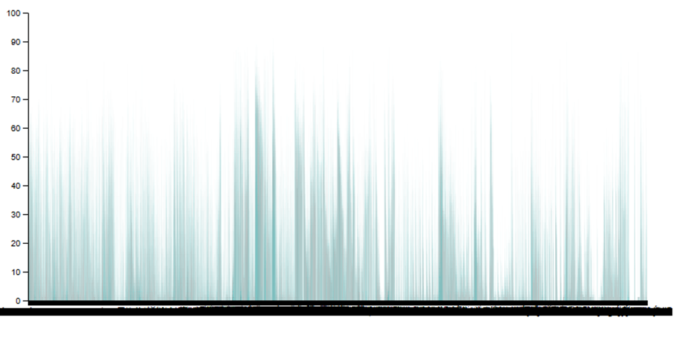
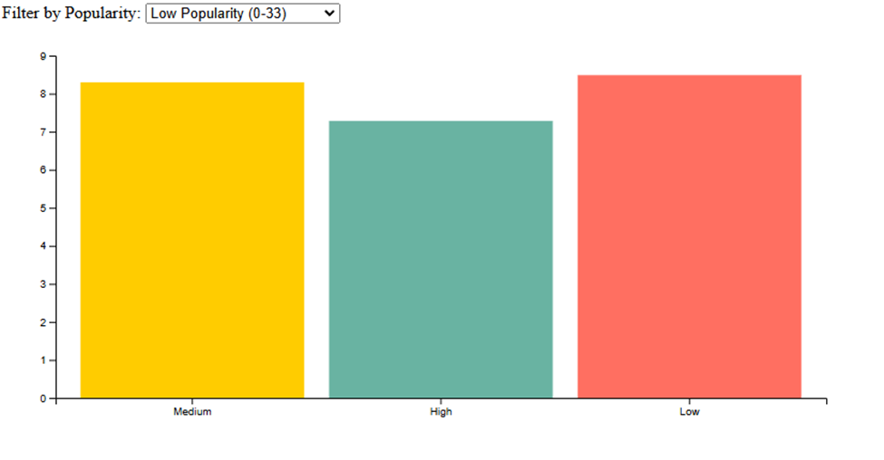

For this final project I chose to use the top Spotify tracks data set. This dataset contains a lot of information. It has the Spotify ID, track name, artist name, year, popularity, artwork, acousticness (which they define as a confidence measure from 0.0 to 1.0 of whether the track is acoustic) , danceability, duration in milliseconds, energy, key, liveness, loudness, mode, speechiness (which they define as a measure of the presence of spoken words in a track (closer to 1.0 indicates more speech-like content)) , tempo, time signature, valence, track url, and language. To begin on this project, I first had issues with my text editor, I was using Virtual Studio Code which I had been comfortable using prior to this project. I was having issues with terminal commands and file paths. I reinstalled and had no luck. I then tried using Atom, and it wasn’t my speed, so I settled on WebStorm by JetBrains. I have used their IntelliJ Idea previously, so it was easy to pick up. As for determining the visualization, I initially wanted to do a chart that displayed the popularity of tracks within the set. I then found that there were way too many track titles and the bar chart was way too crammed. So crammed that the label axis was black bars because of how many overlapping names:
Next, I looked at the other attributes available, I chose to try to group by valence (positivity of the song) and allow the user to hover over the bars and show the popularity and valence rating. Then a filter for popularity.
Although this worked, it was hard to interpret and I decided to change from a bar chart and go a different direction. Therefore, I planned to incorporate more attributes and make a scatter-plot instead of a bar chart. I planned on including the year, popularity, speechiness, and valence. I chose to also allow the user to hover over each point and see the data tied to it. This took a lot more time and research and trial and error than the previous iterations. This final visualization is a scatterplot that is measured by popularity and speechiness (Measures the presence of spoken words in a track). The user can interact with the visualization by selecting a year, changing the max popularity, and the amount of speechiness. I also chose to add a slider to adjust the valence too. The valence measures the “positivity” felt by the track that results in listener happiness. Creating this visualization led to some interesting findings. Going year by year, it is interesting to see the amount of songs per year growing. It was surprising to see that there is more popularity with less speech, I expected to see the opposite. There is also very low popularity with songs with the most speech. It can also be seen that the lower the valence (positivity) the lower the popularity and also lower speech.
Creating this visualization led to some interesting findings. Going year by year, it is interesting to see the amount of songs per year growing. It was surprising to see that there is more popularity with less speech, I expected to see the opposite. There is also very low popularity with songs with the most speech. It can also be seen that the lower the valence (positivity) the lower the popularity and also lower speech.